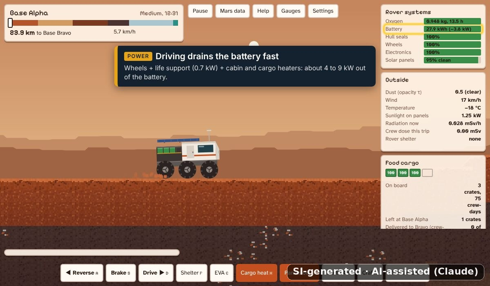
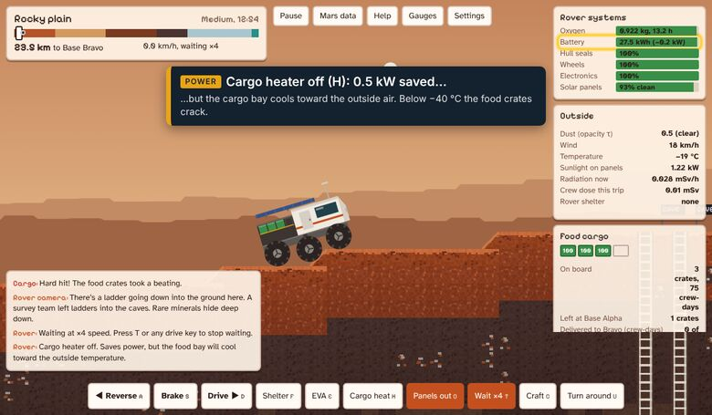
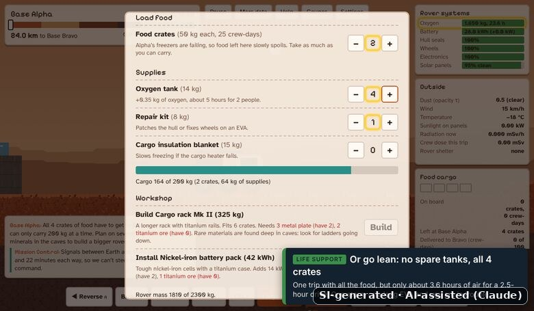
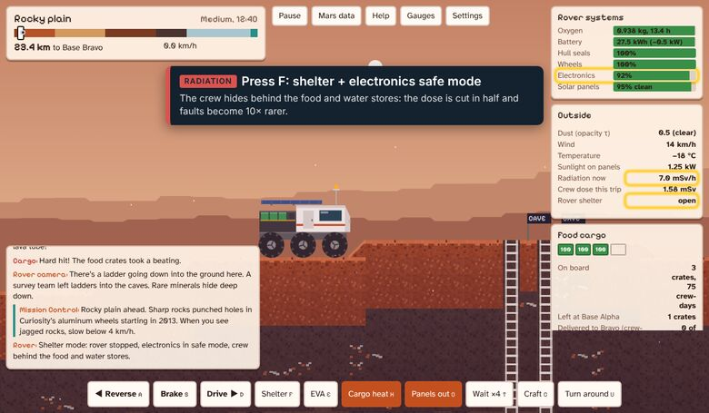
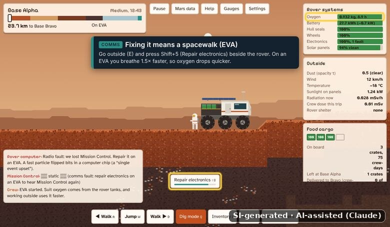
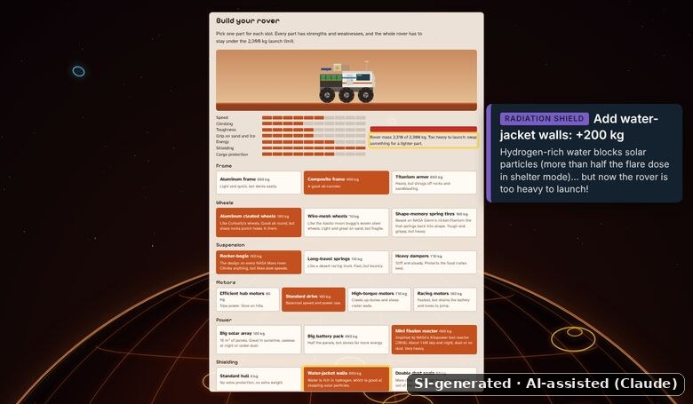
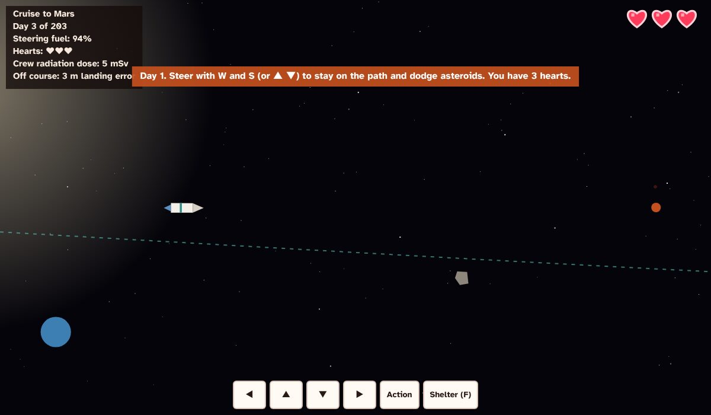

The mission in 6 steps
The clock runs at 1 real second = 1 mission minute. One drive from Alpha to Bravo is about 2.5 mission hours, so each trip takes only a few real minutes.
Pick a mode
Choose Solo (Easy, Medium or Hard) or Multiplayer (Medium or Hard, up to 5 astronauts per lobby, storms about 20% stronger). Type a callsign for the leaderboard.
Fly to Mars (optional)
A mini-game: drop rocket stages at the right moment, steer through a 203-day cruise dodging micrometeoroids, then land. A perfect landing earns bonus plates, bricks and a repair kit. You can also Skip to Mars.
Build your rover
Choose a frame, wheels, suspension, motors, power source and shielding. Every part has a mass, and the rover must stay under the 2,300 kg launch limit.
Load up at Base Alpha
Fill the 200 kg cargo rack with food crates (50 kg each) and supplies: oxygen tanks, repair kits and an insulation blanket. Food left at Alpha slowly spoils.
Drive 24 km east
Cross the rocky plain, dune field, crater rim, lava tube and icy lowland. Survive dust storms and solar flares, and park beside Bravo's dome to dock and unload.
Repeat and finish
Drive back for the rest of the food (oxygen and repairs are refilled at each base). When every crate is at Bravo, press Finish the mission to post your time and earn badges.
Controls
Keyboard and mouse on a computer. On phones and tablets, on-screen buttons cover the same actions.
| Key | What it does |
|---|---|
| D → | Drive right (east, toward Bravo) |
| A ← | Drive left. Facing the other way, the rover backs up slowly |
| S Space | Brake |
| U | Turn the rover around (stop first) |
| F | Storm shelter + electronics safe mode (rover stops, crew moves behind the water wall or food stores) |
| H | Cargo heater on / off |
| O | Stow / deploy the solar panels |
| T | Wait faster (×4) while parked |
| E | Go outside on an EVA (rover must be stopped) |
| C | Fabricator (crafting) |
| P Esc / M | Pause / music on or off |
| Key | What it does |
|---|---|
| A D | Walk |
| W Space | Jump (low gravity: 38% of Earth's) |
| Click / tap (hold) | Dig a block |
| Right click, or Q | Place a block / switch between Dig and Build |
| 1–0, wheel | Pick a block from the hotbar |
| I | Inventory (holds 40 items) |
| C | Fabricator: bricks, glass, metal plates, airlock doors, ladders, lamps, beacons (near the rover) |
| Shift+1–5 | Repair jobs next to the rover: 1 patch hull, 2 fix wheels, 3 clean panels, 4 re-strap cargo, 5 repair electronics. Stand still until the bar fills |
| W / S on a ladder | Climb up / down into caves |
| E | Climb back into the rover |
| Key | What it does |
|---|---|
| Enter X | Drop a rocket stage when its fuel bar reaches the green zone; open the parachute (between 1,250 and 1,700 km/h) |
| W S / ▲ ▼ | Steer in the cruise to stay on the dotted path and dodge micrometeoroids (3 hearts). In the landing, W fires the landing engine |
| A D | Steer sideways while landing (aim for the pad, under 2 m/s for a perfect landing) |
| F | Move the crew into the storm shelter when a solar flare hits on the way |

The big trade-offs
Every system on the rover pulls against the others. Each clip below was recorded in the real game, with a short explanation on top. Click a clip to play it.

Power vs. everything else
Life support takes 0.7 kW all the time. Keeping the cabin warm, the cargo heater (0.5 kW) and night-time lights add more, and driving adds the most: about 4 to 9 kW depending on speed, hills and how heavy you are. Solar panels give at most about 2 kW at noon with clean panels and clear skies, and nothing at night, in the lava tube or deep in a dust storm.
If the battery hits zero, the rover can't drive and the heaters switch off until the sun recharges it.

Air vs. food on every trip
Two astronauts breathe 0.84 kg of oxygen each per day (a real NASA planning number). The rover starts with 0.25 kg, about 3.6 hours. Each oxygen tank adds 0.35 kg (about 5 hours) but takes 14 kg of the 200 kg cargo rack, the same space that carries food.
Oxygen also drains 1.5× faster on an EVA, and a damaged hull (below 60%) leaks air. If oxygen hits zero, the mission is over.

Shelter vs. keep moving
Normal Mars radiation is about 0.03 mSv/h. During a solar flare it jumps to about 14 mSv/h in the open, and particles scramble the electronics (navigation reboots, heater or motor crashes, radio faults, battery dumps). Press F for shelter + safe mode: the dose is halved and faults become about 10× rarer.

Fix the radio vs. save air
Radio signals take 3 to 22 minutes between Earth and Mars, so nobody can drive for you, but Mission Control still sends storm warnings, flare alerts and tips. A flare can cause a radio fault: every Mission Control message turns to static.
Skipping the repair saves air now, but you'll drive blind into the next storm. Safe mode during flares makes radio faults much less likely in the first place.

The mass budget ties them together
The rover must launch under 2,300 kg. The heaviest choices are the power source and the shielding, so you can rarely have the best of both. A heavier rover also uses more power to drive.
| Power source | Mass | Good at |
|---|---|---|
| Big solar array (16 m²) | 120 kg | Light, strong in sun; 28 kWh battery; useless at night and in dust |
| Big battery pack | 260 kg | 46 kWh stored; half the panels |
| Mini fission reactor | 420 kg | ~1 kW day and night, dust or not; only 22 kWh battery |
Trade-off planner
Try a build before you play. These numbers use the same formulas as the game, simplified for a parked rover at midday.
The route and its hazards
The first drive to Bravo follows a script, so you can learn where the trouble is. Later trips get random storms and flares, more often on harder difficulties.
Alpha
Dust storm warning
Dust devil
Crater rim jump
Solar flare
Lava tube
2nd storm
Maybe a local storm
Bravo
🌪️ Dust storms
About 80 to 100 minutes of warning. Sand blasts the hull, piles drifts around a parked rover and coats the panels. Build a shelter: wall in both sides and add a roof (red glow = gaps, green = sealed), or hide in the lava tube. Double dust seals cut storm damage by about two thirds.
☀️ Solar flares
About 18 minutes of warning, then roughly 36 minutes of particles. Race for the lava tube if it's close, build a thick roof (ice counts double), or press F right away. Then repair any electronics faults on an EVA.
🥶 Cold and night
Mars averages about −60 °C. At sunset the panels stop and it gets much colder. Keep the cargo heater on, or pack the insulation blanket in case the heater breaks.
🪨 Rocks and crests
Sharp rocks punch holes in wheels: slow below 4 km/h. At only 38% of Earth's gravity, crests launch the rover. Hard landings crack food crates and loosen straps, so ease off before drops.
🏜️ Sand and getting stuck
Spinning wheels? Back up and take a run at it, or go on an EVA and dig a path. If you roll over, the crew winches you back: 10 minutes, 1 kWh and shaken cargo.
☠️ Toxic dust
If the hull drops below 50% during a storm, perchlorate dust leaks into the cargo and spoils food. Patch the hull with a repair kit on an EVA (Shift+1).
Caves, crafting and a bigger rover
Look for CAVE signs with ladders going down. Deep underground you'll find rare titanium ore, opal and meteorite iron. Bring them to a base workshop to upgrade:
| Upgrade | Gives you | Needs |
|---|---|---|
| Cargo rack Mk II | 325 kg (6 crates) | 3 plates, 2 titanium |
| Cargo rack Mk III | 450 kg (9 crates) | 4 plates, 4 titanium, 2 meteorite |
| Long-bed rover, 4th axle | 600 kg (12 crates) | 6 plates, 3 titanium, 3 meteorite, 3 opal |
| Nickel-iron battery | +14 kWh | 2 plates, 1 titanium |
| Solid-state battery | +30 kWh | 3 plates, 2 meteorite, 2 opal |
The fabricator (C) turns what you dig into building blocks. Each recipe uses a little battery power:
| Make | From |
|---|---|
| 2 bricks | 3 regolith (sintered soil) |
| 1 glass | 2 sand (roofs that let sunlight through) |
| 1 metal plate | 2 iron ore |
| 1 airlock door | 2 plates + 1 glass (walk through, sand can't) |
| 3 ladders | 2 basalt |
| 2 lamps | 1 plate + 1 glass |
| 1 outpost beacon | 2 plates + 2 bricks + 1 lamp |
Tips from the trainer
Difficulty levels
| Level | What changes |
|---|---|
| Easy (solo only) | All 4 crates fit in one trip (325 kg rack). Gentler storms and flares, softer landings, slower spoilage. |
| Medium | The real challenge: 200 kg rack, storms, flares and spoilage as in the mission briefing. |
| Hard | Bigger storms with less warning, stronger flares, rougher landings, faster spoilage. |
Badges to collect

Real science inside
The game runs on a snapshot of real numbers: Mars gravity (3.71 m/s²), sunlight (~590 W/m²), oxygen use (0.84 kg per person per day, NASA's Baseline Values and Assumptions Document), surface radiation (~0.67 mSv per day measured by Curiosity's RAD), real flares like the X9.0 flare of October 3, 2024, and the 2018 planet-wide dust storm that ended Opportunity's mission.
Press Mars data in the game at any time to read the sources. Numbers are simplified for learning; it is not a mission-planning tool.
▶ Start your mission